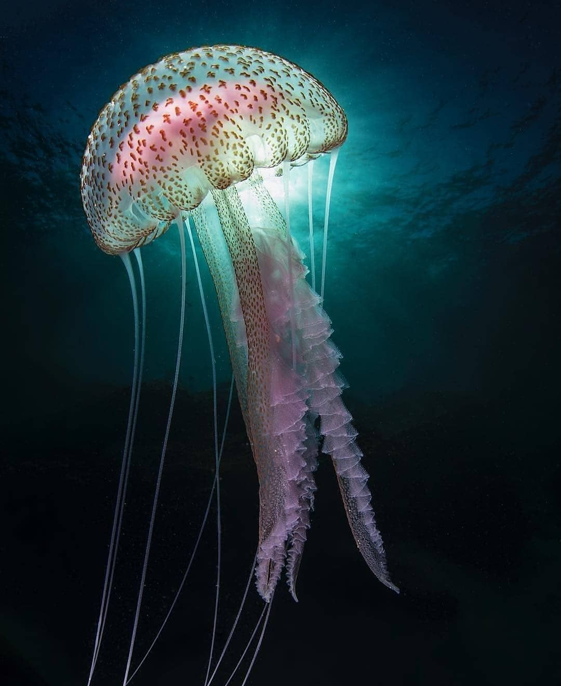
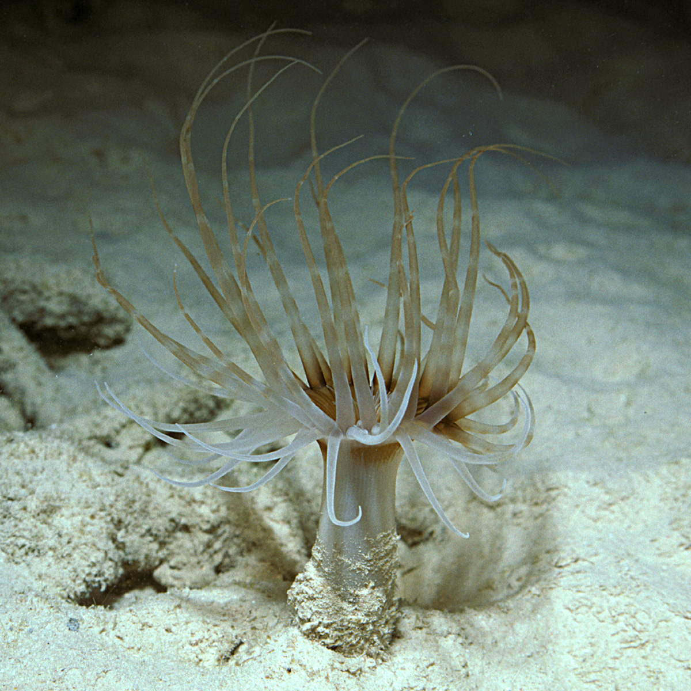
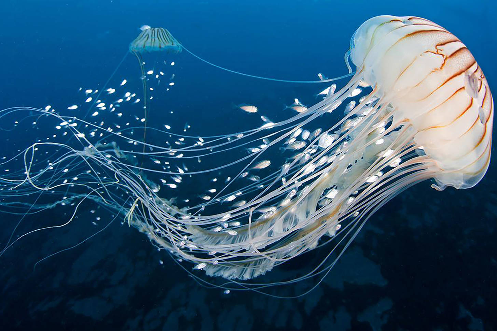

Медуза - одно из самых древних живых существ, до сих пор живущих на нашей плнете. Они появились раньше динозавров!
По мнению ученых они появились около 650 миллионов лет назад, сейчас их насчитывается более 9 тыс. видов.
Жизненный цикл
Жизненный цикл медуз состоит из двух стадий:
- Полип

- Медуза

Интеренсые факты о медузах
- Тело медуз на 95-98% состоит из воды;
- У них нет ни мозга, ни сердца, ни крови;
- Некотрые виды этих существ живут на глубине 10 км, что сильно затрудняет их изучение;
- У медуз по 24 глаза, что обеспечивает круговой обзор;
- Медуза Turritopsis nutricula бессмертна, поскольку она не гибнет, а возвщвется к стадии полипа, и так до бесконечности.
Если бы не естесственные враги, то они заполонили бы все океаны;
- Самая крупная медуза в мире — гигантская антарктическая. Диаметр её купола достигает трёх метров, а длина щупалец — 35 метров